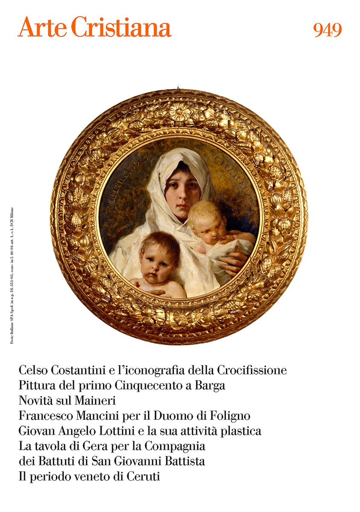
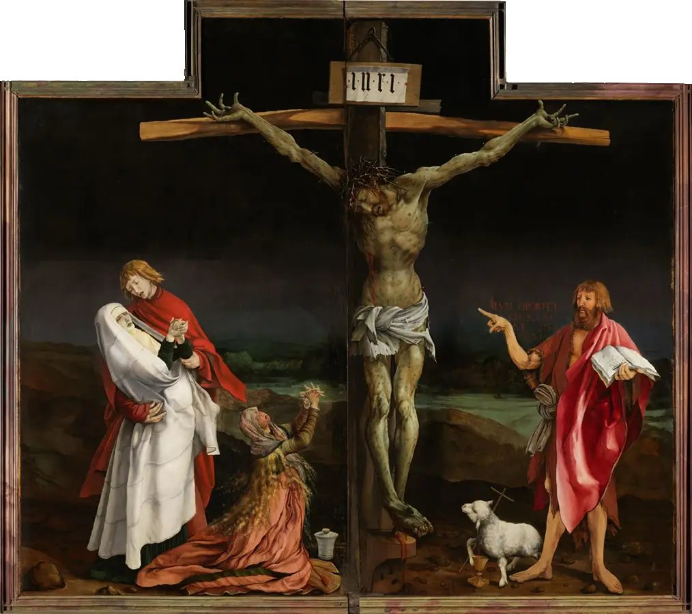
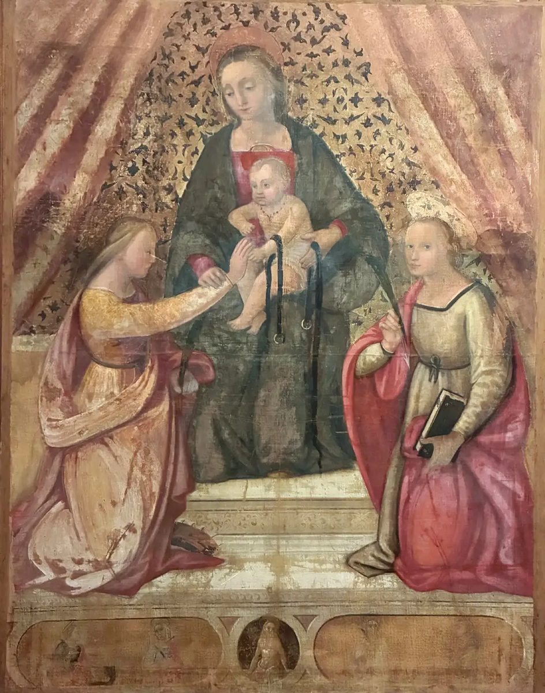
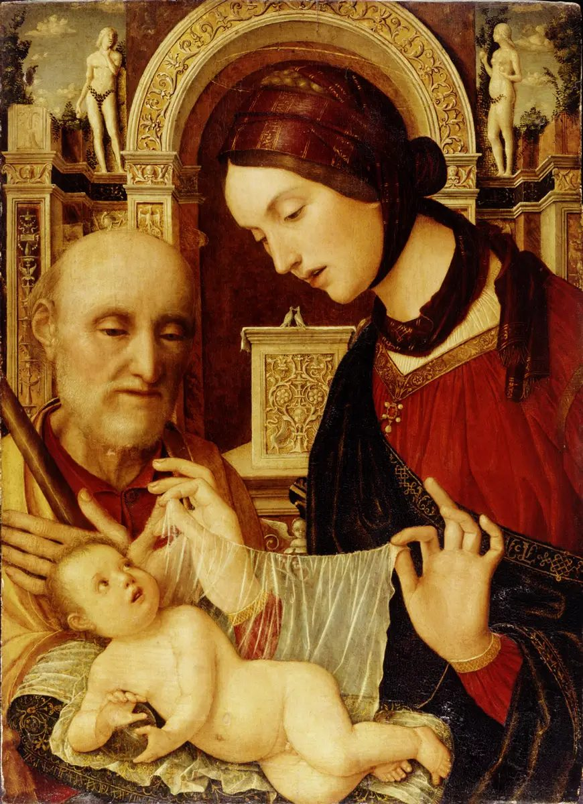
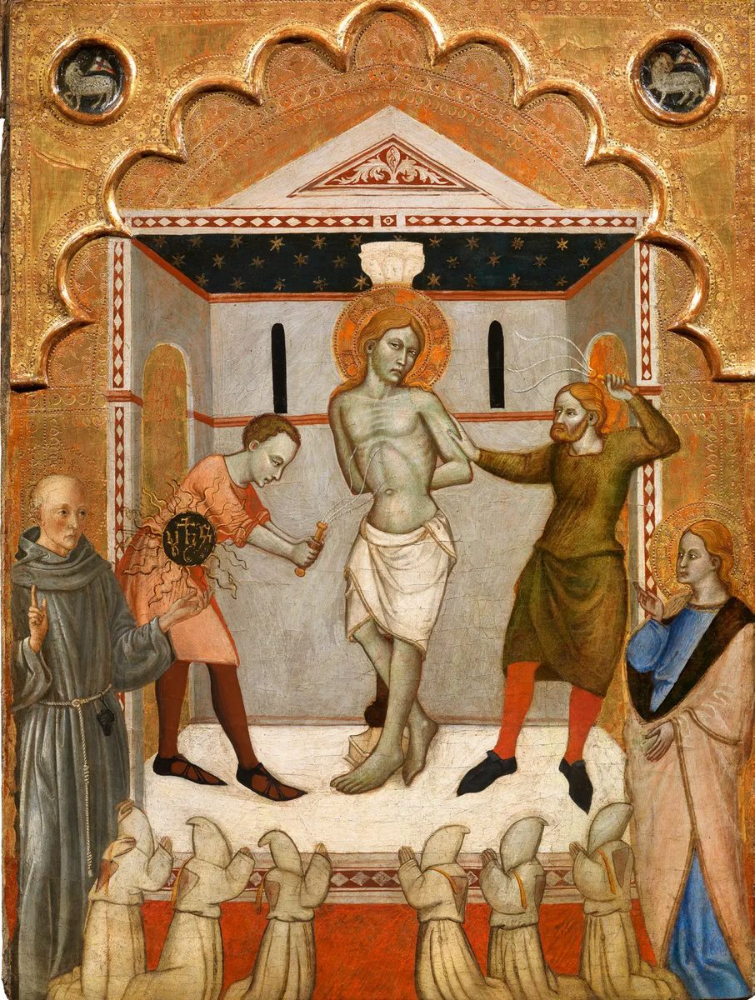

@artecristiana.rivista
Rivista scientifica di ricerca, approfondimento e dibattito sulle arti per la liturgia.
Dal 1913
In primo piano
Un grande ‘modello’ poco noto del periodo veneto di Ceruti Olga Piccolo, Arte Cristiana n° 949Ultimo numero
- Numero 949 Gennaio-aprile 2026, volume CXIV
-





Copertina del numero 949: Nicolò Barabino, Charitas, 1887, Genova, Collezione La Galleria BPER Banca. Courtesy La Galleria BPER Banca, Genova.
Matthias Grünewald, Crocifissione, Altare di Isenheim, Colmar, Musée Unterlinden. © Musée Unterlinden, Colmar / Le Réverbère
Bottega lucchese del XVI secolo, Matrimonio mistico di Santa Caterina d’Alessandria alla presenza di Santa Cristina, Barga (LU), Fondazione Conservatorio di Santa Elisabetta. © Archivio fotografico dell’autore
Giovan Francesco Maineri, Sacra Famiglia, London, Greenwich, Ranger’s House. © Historic England Archive, The Wernher Foundation
Iacopo di Michele detto Gera da Pisa, Flagellazione, 1370 circa, tempera e oro su tavola, cm 72 x 54, collezione privata, già Collezione Sestieri, proveniente da Pisa, Compagnia di San Giovanni Evangelista. Su gentile concessione del proprietario